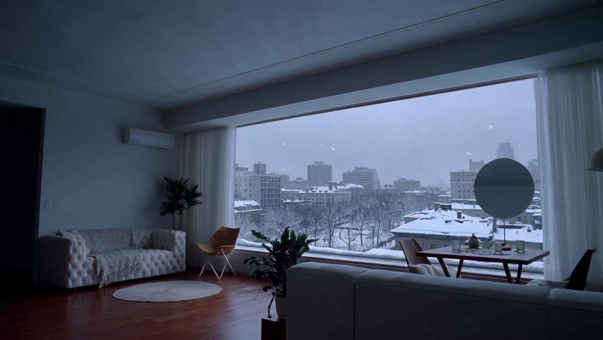
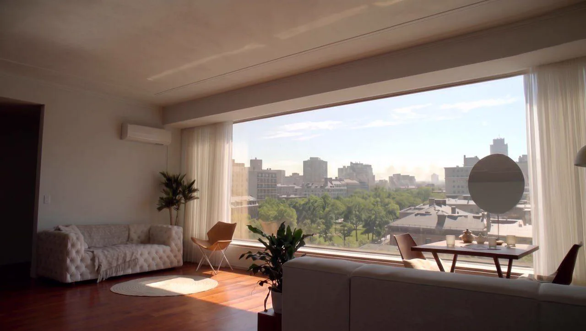
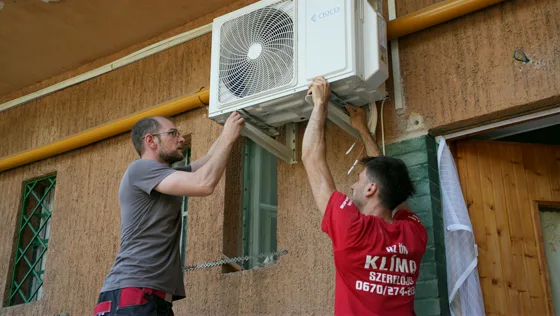
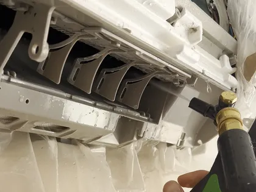
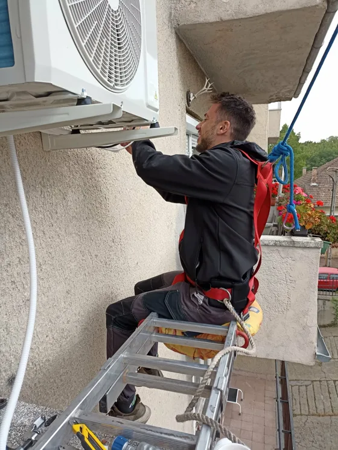
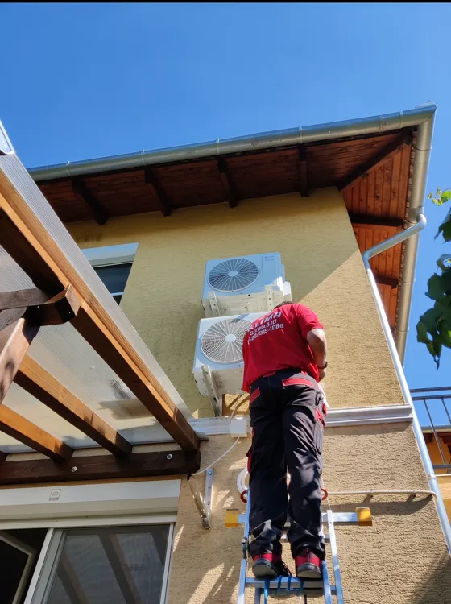
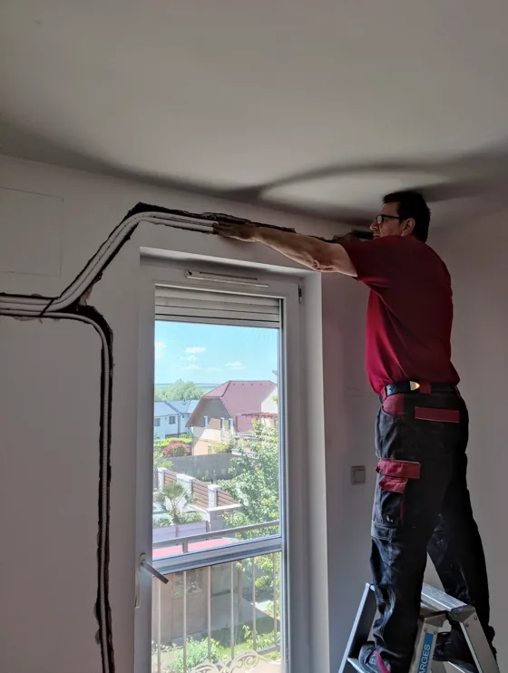
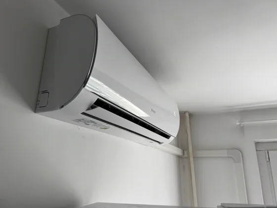

NORD RAC QUANTUM
Ugyanaz a gép, három méretben. A szobádhoz igazítjuk.


Nyáron hűt, télen fűt, és a gázszámlád töredékéből. Ugyanaz a doboz a falon, csak nem mindegy, ki tette oda és mekkorát.
Ezeket a gépeket ajánljuk a leggyakoribb három esetre. Az ár a gépet és a telepítés munkadíját is tartalmazza.
Ugyanaz a gép, három méretben. A szobádhoz igazítjuk.

Ugyanaz a gép, három méretben. A szobádhoz igazítjuk.
A négyzetméter-sávok átlagos, 2,6 méteres belmagassággal számolnak. Ha nálad ettől eltér, a méretező pontosabb számot ad.
Nem ez a gép kell? A többi gép is fent van árral együtt, és a méretező megmondja, melyik kell a te szobádba. Ami az áron felül jöhet, az itt olvasható.
Klímát telepítünk és tisztítunk Budapesten és környékén, több mint tíz éve.

Három méter hűtőköri cső az alapárban, felette 15 000 Ft méterenként.
Beltéri és kültéri egység felszerelése, falátfúrás, hűtőköri csövek és kondenzvíz-elvezetés kiépítése. Ingyenes kiszállás, minimum három év garancia.

A gép köré védőzsák kerül, a szennyeződés a zsákba megy, nem a nappalidba.
Magasnyomású tisztítás, lerakódott por és penész eltávolítása, mélyreható gombátlanítás, ventilátor-henger mosás.

Azt hozza rendbe, amin a levegő átmegy. Ha a gép nem szagos, csak poros, sokszor elég.
Porszűrők és burkolat kimosása, fertőtlenítés. A hőcserélő átmosása a mosózsákos tisztítás része.
Egy klímát egyszer szerelnek fel, és tíz évig azzal élsz. A rosszul méretezett gép többet fogyaszt, a rosszul kivezetett kondenzvíz tönkreteheti a faladat vagy akár a gépet is.
Nem tudod, melyik kell? Hívj: +36 70 274 2138. Ha épp nem tudjuk felvenni, visszahívunk.
Hat kérdés, fél perc, és megmondjuk, hány kilowattos gép kell. Mutatunk hozzá hármat a saját készletünkből is.
Budapesten és a környező településeken dolgozunk, harminc kilométeres körzetben. Írd be a településed, és megmondjuk.
A térkép képi tartalmát a fenti településkereső mező szövegesen is megadja: írd be a településed, és megmondjuk, kimegyünk-e.
Szolgáltatási terület, 77 település Szolgáltatáson kívül eső terület
A kiszállás és a felmérés ingyenes.
Néhány kerületről külön is írtunk:
Nem katalógusképek. Ezeken a helyszíneken dolgoztunk.

Ahol a helyzet megkívánja, hevederben, kikötve dolgozunk: nem a bátorság a szakma része, hanem a rögzítés.
A képen: a szerelő hevederben, a kültéri egység rögzítésén dolgozik.

Több gépnél a kültériek mehetnek egymás alá, ugyanarra a falszakaszra. Így egy falfelületet foglalnak el, nem kettőt.
A képen: két kültéri egység egymás alatt.

Ahol a felújítás engedi, a csövek falba vésett nyomvonalba kerülhetnek. A kész falon csak a gép látszik, vezeték nem.
A képen: a vésett nyomvonal, még vakolás előtt.

Nem minden fal véshető. Ilyenkor a csövek a mennyezet mentén futnak: esztétikusan, rendezetten, rögzítve.
A képen: a kész gép és a mennyezet menti csövek.
Teljesen elégedett vagyok velük. A ház még építés, illetve burkolás alatt volt, amikor a klímák kerültek felszerelésre, de nagyon rugalmasan álltak hozzá. A helyszíni felmérés alapos volt és a szerelést is szépen, tisztán oldották meg. Használat közben az egyik kültéri egység ventilátorlapátja eltört, de szóltam nekik, és nagyon hamar kijöttek. Pár perc alatt kicserélték, minden gond nélkül. Jó tapasztalatom volt velük, bátran ajánlom őket.
Telefonon kaptam időpontot Budapest 8-ik kerületében. Megbeszélt időben ki is jött egy nagyon kedves fiatal szerelő. Korrektül kimosta a beltéri egységet, fertőtlenítés is megtörtént. Be is allitotta a klímaberendezés optimalis működését. A kifizetett összeg azonos volt a telefonban megbeszéltekkel. Ajánlani tudom mindenkinek.
Gyors. Tiszta. Profi. A klímatisztítás pont olyan volt, amilyennek lennie kell: zökkenőmentes és alapos. Maximális elégedettség!
Megvagyok elégedve a szolgáltatásaival, bátran tudom ajánlani bárkinek!
Nagyon elégedettek vagyunk, gyorsan, tisztán, megbízhatóan dolgoznak. Minden kérésünkre találtak megoldást, szívből ajánljuk a csapatot!
Köszönöm a precíz és lelkiismeretes munkát, legközelebb is örömmel hívom Önöket. :)
Nagyon kedvesek,alaposak, mindent úgy csináltak ahogy meg volt beszélve, nagyon precízek csak ajánlani tudom őket!!:)
Mindent az előre megbeszélt módon csináltak, elégedett vagyok a munkájukkal.
Írd meg pár sorban: hány szoba, mekkora, és mit szeretnél. A kiszállás és a felmérés ingyenes.
Ezt a klímaberendezést kéred: .
Miért válik hőcsapdává a lakás, hogyan lehet hűteni megfázás nélkül.
Mit tud a mobil klíma és mit nem, miért dolgozik a saját munkája ellen a kivezető cső.
Mit fizetsz a telepítésért, mi van benne.
Ingyenes kiszállás, három év garancia.